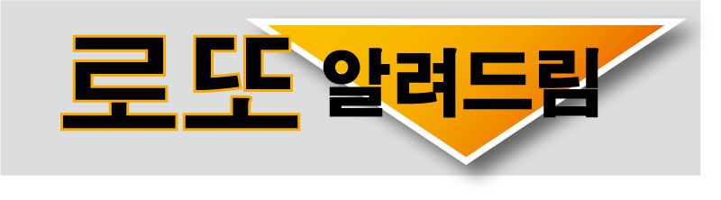

2002년 연말에 시작된 로또! 그동안 900여 회가 넘게 진행됐습니다.
그러면서 자연스럽게 잘 나오는 번호와 잘 안 나오는 번호가 생겨났습니다.
이론적으로 로또 공 한 개가 나올 확률 1/45이지만, 무슨 이유에서인지
가장 잘 나오는 번호와 가장 안 나오는 번호간 빈도수의 차이는 눈에 띄게 나타나고 있습니다.
번호간 이런 차이를 무시한 채 그냥 같은 확률로 번호만 무작위로 뽑아서 드리는
로또 앱은 이제 지우세요!
'로또 알려드림'은 번호간 출현 빈도 차이를 추첨에 반영했습니다!!
로또 번호 6개를 더한 '총합'을 분석해보면 다음의 그래프와 같이 가운데가
도톰하고 양끝으로 갈 수록 눈에 띄게 적어지는 양상을 보입니다.
번호 조합이 작은 숫자로만 이루어지거나 큰 숫자로만 이루어지는 경우가 적다는 뜻입니다.
'로또 알려드림'은 전체 경우의 수 중에 양극단 5%씩 10%를 버리고 90% 구간에
해당하는 번호 조합만 추출했고 이로써 당첨 확률을 더 올리게 됩니다.
물론 하위 10%에 해당하는 총합의 숫자들이 1등 번호가 될 수도 있겠지만
그런 경우를 기다리느니 가장 확률이 높은 구간을 선택하는 것입니다.